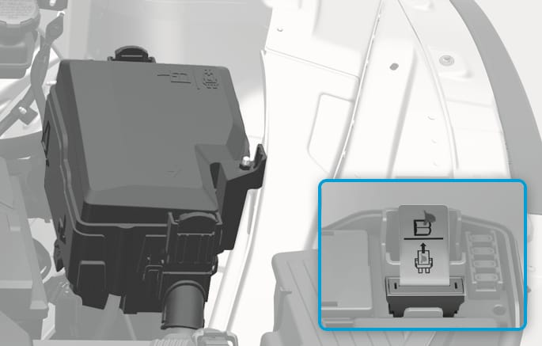

고전압 차단 스위치

2C_HighVoltageCutoffSwitch
고전압 차단 스위치는 당사 직영 하이테크센터에서 차량을 수리할 때 배터리의 고전압 전원을 차단하기 위한 장치로, 모터룸 퓨즈 박스 내부에 있습니다.
-
고전압 차단 스위치를 만지지 마십시오. 감전 등의 사고로 인해 심각한 부상이나 인명피해가 발생할 수 있습니다.
-
고전압 차단 스위치의 점검 및 정비가 필요한 경우 반드시 당사 직영 하이테크센터나 블루핸즈에 문의하십시오.
-
피할 수 없는 응급 상황이 아니라면 임의로 고전압 차단 스위치를 분리하거나 선을 자르지 마십시오. 시동이 걸리지 않는 등 차량에 심각한 문제가 발생할 수 있습니다.